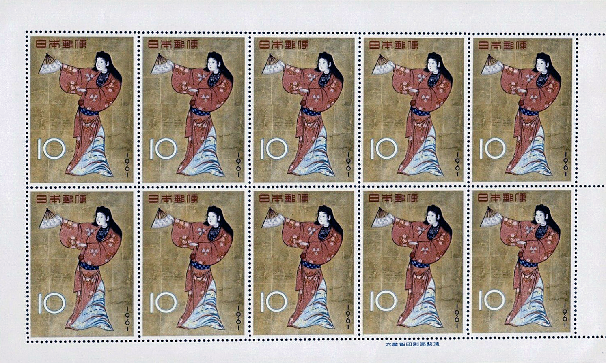
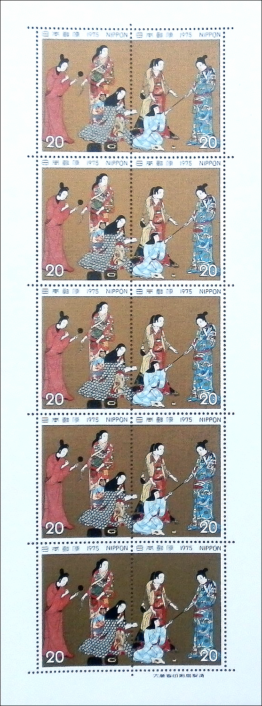
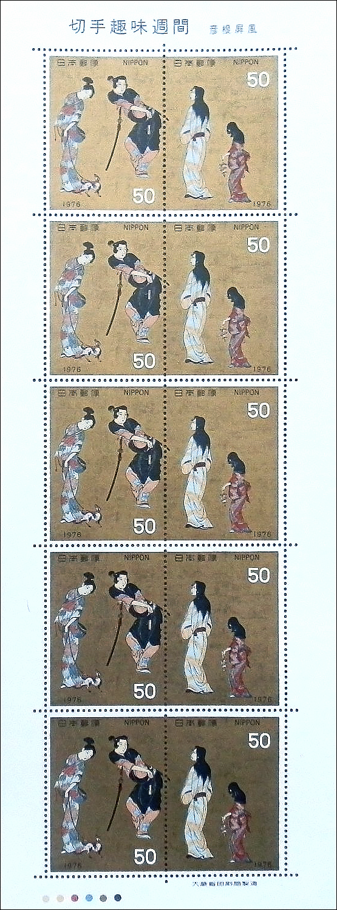
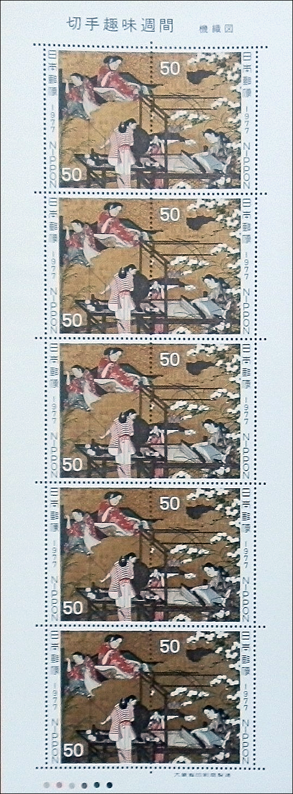
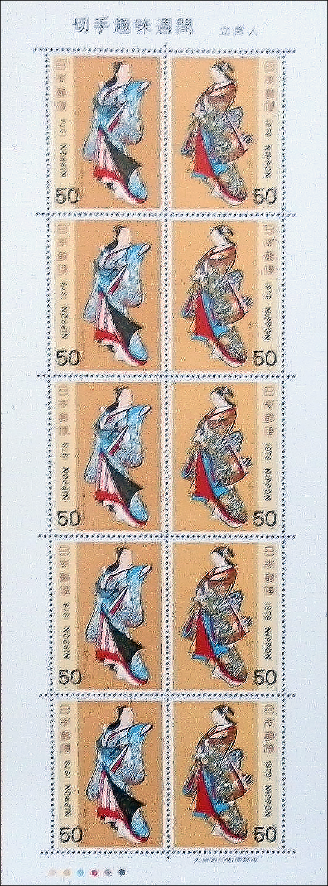
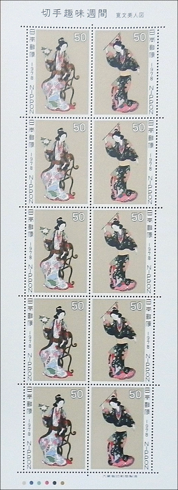
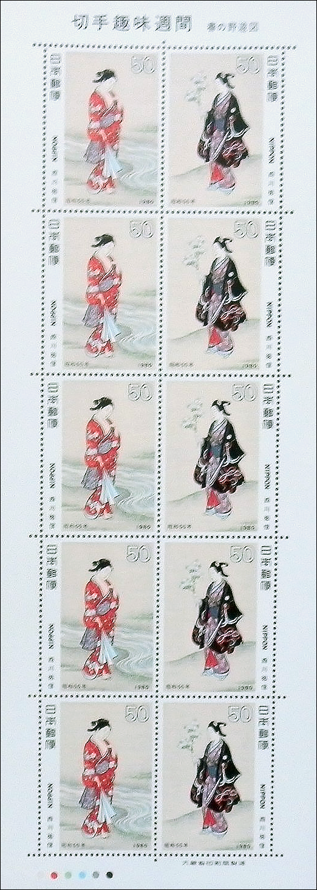
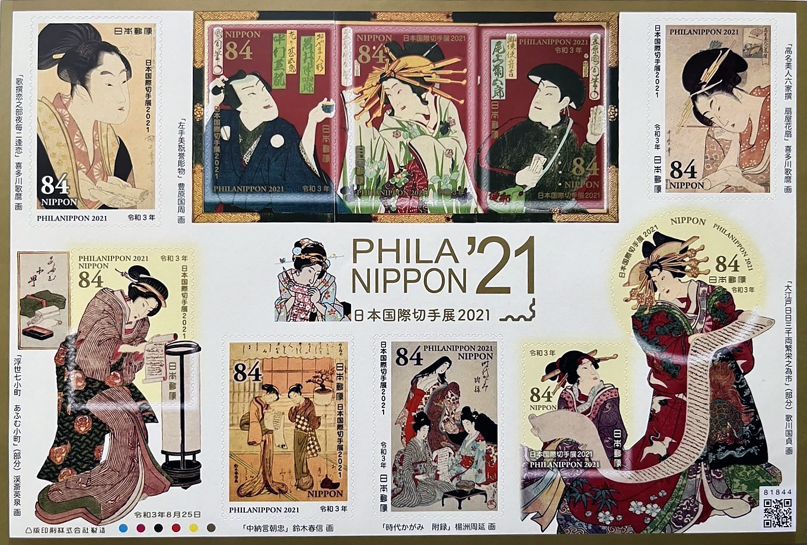
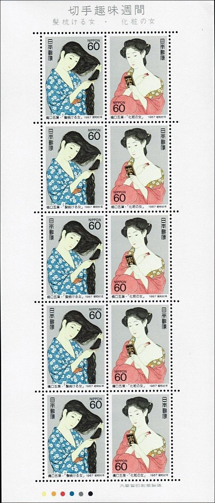
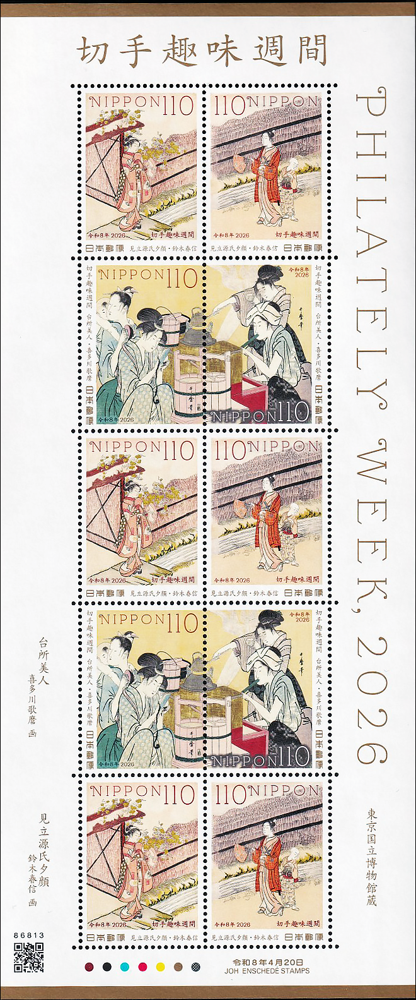

Japan Philatelic Week
Japanese art in miniature · 1961–2026
Japan’s Philately Week stamps offer a fascinating encounter with Japanese visual culture. Elegant figures, elaborate costumes and the expressive lines of traditional prints invite close examination. The complete sheets reveal how repeated designs, perforations and printed margins contribute to the visual rhythm of philatelic art.
From the 1960s to the 1970s
The selection begins with a horizontal sheet from 1961, followed by tall sheets from the 1970s. Click any sheet to examine it at full resolution.










Continuity and variety
Paired designs and contrasting costumes create a distinctive rhythm across the vertical sheets.




A related philatelic celebration
The horizontal PHILA NIPPON 2021 sheet provides a contrasting composition, bringing together several images of Japanese art. It is presented here as related exhibition material, rather than as a Philately Week issue.


Traditional art across generations
The sheets from 1987 and 2026 illustrate the enduring appeal of Japanese figure imagery on postage stamps.



